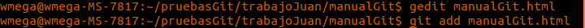

Para empezar a usar Git lo primero que hacemos es clonar un repositorio para trabajar en el.
Una vez tengamos el repositorio, podemos crear una rama para trabajar. La rama se crea con el comando 'git branch NombreDeLaRama'. Para ver las ramas utilizamos el comando 'git branch'.
El comando git status sirve para poder ver el estado actual del repositorio, y si se han actualizado, creado o eliminado archivos.
Para guardar los cambios que se hayan realizado en un archivo, hay que hacer un git add y el nombre del archivo.
El comando 'commit -m'para guardar los cambios de nuestro proyecto. Aún no esta en nuestro repositorio remoto, para ello tendremos que usar un git push.
Al hacer git push enviamos nuestro proyecto a nuestro repositorio remoto en la página de github.com.
Cuando tu compañero esta trabajando en el proyecto, y hace varios commits, necesitarás hacer un 'git pull origin master' para actualizar tu directorio de trabajo y tener los dos la misma versión del proyecto.
Si tenemos dos ramas y queremos fusionarlas tendrás que usar el comando git merge.
El comando git rebase se diferencia del comando git merge en que en vez de fusionar las ramas, las reorganiza en una sola.